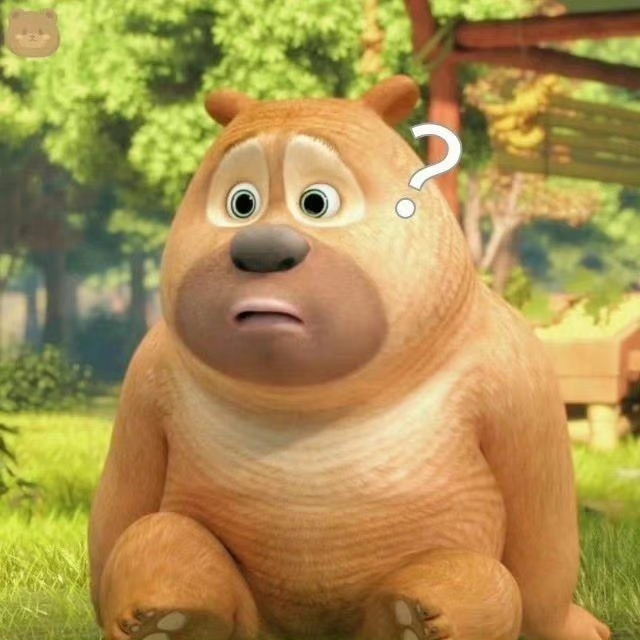

熊二，是 《熊出没》系列动画片中的一个核心角色，憨厚、力大无穷，但性格单纯，智商一般，喜欢吃蜂蜜和各种零食，有点傻乎乎的，却很善良，是哥哥熊大的好帮手
熊二体型壮硕，毛发棕色，耳朵大大的，憨态可掬
憨厚老实: 熊二性格淳朴，为人正直，做事不拐弯抹角，经常被光头强捉弄。 力大无穷: 熊二拥有强大的力量，但经常因为不够灵活而被对手利用。 吃货: 熊二非常喜欢吃蜂蜜和各种零食，有时会为了食物闯祸，是个名副其实的“吃货”。 善良正义: 熊二心地善良，乐于助人，正义感十足，关键时刻会挺身而出。 对熊大依赖: 熊二非常依赖哥哥熊大，遇到困难总是会找熊大帮忙，但熊大也经常要为熊二的“闯祸”收拾烂摊子。